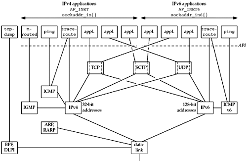

2.2 The Big Picture
Although the protocol suite is called "TCP/IP," there are more members of this family than just TCP and IP. Figure 2.1 shows an overview of these protocols.

We show both IPv4 and IPv6 in this figure. Moving from right to left, the rightmost five applications are using IPv6; we will talk about the AF_INET6 constant in Chapter 3, along with the sockaddr_in6 structure. The next six applications use IPv4.
The leftmost application, tcpdump, communicates directly with the datalink using either the BSD packet filter (BPF) or the datalink provider interface (DLPI). We mark the dashed line beneath the nine applications on the right as the API, which is normally sockets or XTI. The interface to either BPF or DLPI does not use sockets or XTI.
There is an exception to this, which we will describe in more detail in Chapter 28: Linux provides access to the datalink using a special type of socket called SOCK_PACKET.
We also note in Figure 2.1 that the traceroute program uses two sockets: one for IP and another for ICMP. In Chapter 28, we will develop IPv4 and IPv6 versions of both ping and traceroute.
We now describe each of the protocol boxes in this figure.
IPv4 | Internet Protocol version 4. IPv4, which we often denote as just IP, has been the workhorse protocol of the IP suite since the early 1980s. It uses 32-bit addresses (Section A.4). IPv4 provides packet delivery service for TCP, UDP, SCTP, ICMP, and IGMP. | IPv6 | Internet Protocol version 6. IPv6 was designed in the mid-1990s as a replacement for IPv4. The major change is a larger address comprising 128 bits (Section A.5), to deal with the explosive growth of the Internet in the 1990s. IPv6 provides packet delivery service for TCP, UDP, SCTP, and ICMPv6.
We often use the word "IP" as an adjective, as in IP layer and IP address, when the distinction between IPv4 and IPv6 is not needed. | TCP | Transmission Control Protocol. TCP is a connection-oriented protocol that provides a reliable, full-duplex byte stream to its users. TCP sockets are an example of stream sockets. TCP takes care of details such as acknowledgments, timeouts, retransmissions, and the like. Most Internet application programs use TCP. Notice that TCP can use either IPv4 or IPv6. | UDP | User Datagram Protocol. UDP is a connectionless protocol, and UDP sockets are an example of datagram sockets. There is no guarantee that UDP datagrams ever reach their intended destination. As with TCP, UDP can use either IPv4 or IPv6. | SCTP | Stream Control Transmission Protocol. SCTP is a connection-oriented protocol that provides a reliable full-duplex association. The word "association" is used when referring to a connection in SCTP because SCTP is multihomed, involving a set of IP addresses and a single port for each side of an association. SCTP provides a message service, which maintains record boundaries. As with TCP and UDP, SCTP can use either IPv4 or IPv6, but it can also use both IPv4 and IPv6 simultaneously on the same association. | ICMP | Internet Control Message Protocol. ICMP handles error and control information between routers and hosts. These messages are normally generated by and processed by the TCP/IP networking software itself, not user processes, although we show the ping and traceroute programs, which use ICMP. We sometimes refer to this protocol as ICMPv4 to distinguish it from ICMPv6. | IGMP | Internet Group Management Protocol. IGMP is used with multicasting (Chapter 21), which is optional with IPv4. | ARP | Address Resolution Protocol. ARP maps an IPv4 address into a hardware address (such as an Ethernet address). ARP is normally used on broadcast networks such as Ethernet, token ring, and FDDI, and is not needed on point-to-point networks. | RARP | Reverse Address Resolution Protocol. RARP maps a hardware address into an IPv4 address. It is sometimes used when a diskless node is booting. | ICMPv6 | Internet Control Message Protocol version 6. ICMPv6 combines the functionality of ICMPv4, IGMP, and ARP. | BPF | BSD packet filter. This interface provides access to the datalink layer. It is normally found on Berkeley-derived kernels. | DLPI | Datalink provider interface. This interface also provides access to the datalink layer. It is normally provided with SVR4. |
Each Internet protocol is defined by one or more documents called a Request for Comments (RFC), which are their formal specifications. The solution to Exercise 2.1 shows how to obtain RFCs.
We use the terms "IPv4/IPv6 host" and "dual-stack host" to denote hosts that support both IPv4 and IPv6.
Additional details on the TCP/IP protocols themselves are in TCPv1. The 4.4BSD implementation of TCP/IP is described in TCPv2.
|